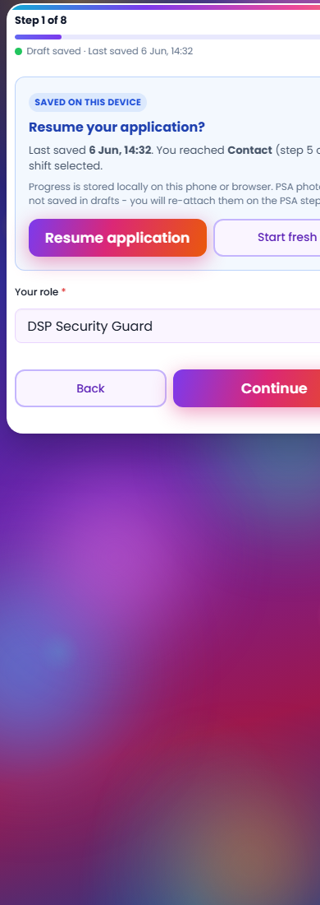
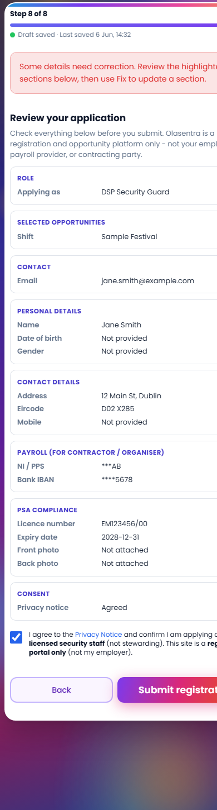
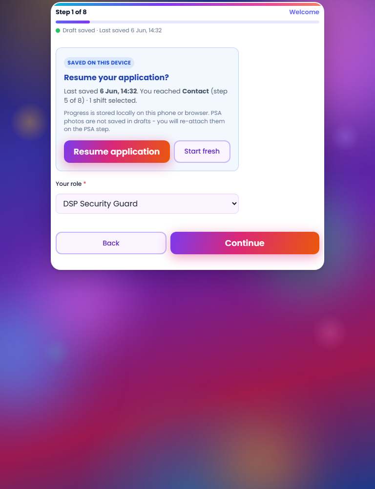

| Requirement | Status | Evidence |
|---|---|---|
| Improve autosave visibility | PASS | reg-wizard__save-status in wizard shell |
| Draft saved status clearly shown | PASS | Green indicator + “Draft saved” copy |
| Last saved time | PASS | formatSavedTime() in saved state |
| Saving indicator | PASS | “Saving draft…” + pulse animation |
| Resume application experience | PASS | Enhanced resume card with step name, time, shifts |
| Unobtrusive indicators | PASS | Single-line 0.72rem status below progress |
| Clean mobile UX | PASS | Stacked resume buttons <400px; screenshots at 390px |
| No database changes | PASS | localStorage only |
| No submit.php changes | PASS | Automated grep check |
| Legacy unaffected (flag OFF) | PASS | Wizard scripts gated in index.php |
Command: powershell -ExecutionPolicy Bypass -File scripts\verify-phase-a6.ps1
| Area | Checks | Result |
|---|---|---|
| Wizard shell mount | 1 | PASS |
| Autosave JS (status, time, localStorage) | 7 | PASS |
| Resume prompt JS | 6 | PASS |
| CSS styles | 5 | PASS |
| Wizard gating + submit.php | 2 | PASS |
| Scenario | Status | Method |
|---|---|---|
| Resume prompt on return visit | PASS | wizard-screenshot-preview.php?step=1&mode=resume |
| Save status on review step | PASS | wizard-screenshot-preview.php?step=8 with saved indicator |
| Full CSS stack loads | PASS | HTTP probe in capture-wizard-screenshots-styled.ps1 |
| Flag OFF legacy form | PASS | No autosave scripts when data-wizard-mode="0" |



Capture command: powershell -File scripts\run-a6-screenshots.ps1
| Check | Status |
|---|---|
| Instant rollback via flag OFF | PASS |
| No server-side persistence added | PASS |
| Employer/organiser workflow unchanged | PASS |
Proceed to Phase A.7 (mobile QA + accessibility) when this report is accepted. Do not enable wizard flag until Phase A.8.